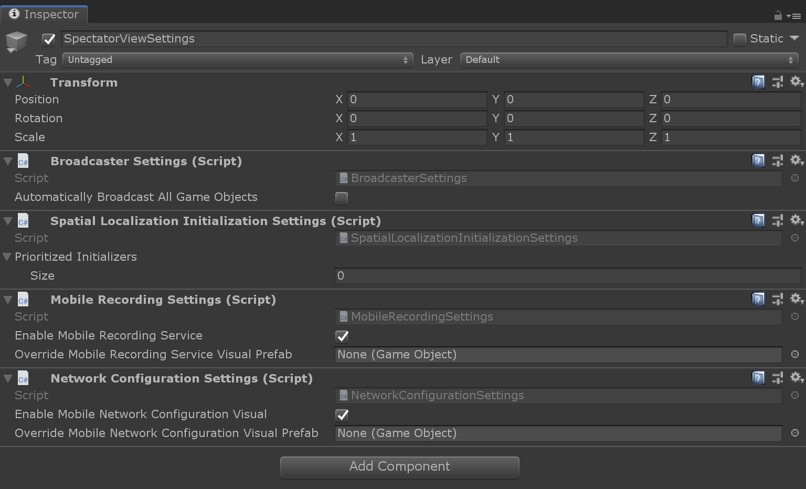

Custom IRecordingServiceVisuals
Spectator View supports specifying a custom prefab for starting and stopping screen recording on mobile devices. To configure your own prefab, follow the steps below:
- Create a prefab containing an Unity component that implements
IRecordingServiceVisual. - Create a SpectatorViewSettings prefab by calling 'Spectator View' -> 'Edit Settings' in the Unity Editor toolbar.

- Specify your created prefab as the
Override Mobile Recording Service Visualin theMobileRecordingSettingsin your SpectatorViewSettings prefab.

When a scene containing the SpectatorView prefab starts, the SpectatorView MonoBehaviour will instantiate this custom prefab. It will then search for an IRecordingServiceVisual in the created game object, which is provided a reference to the IRecordingService. Your UI will be responsible for managing its own show and hide behavior.
Custom INetworkConfigurationVisuals
Spectator View supports specifying a custom prefab for choosing an IP Address on mobile devices. To configure your own prefab, follow the steps below:
- Create a prefab containing a Unity component that implements
INetworkConfigurationVisual. - Create a SpectatorViewSettings prefab by calling 'Spectator View' -> 'Edit Settings' in the Unity Editor toolbar.
- Specify your created prefab as the
Override Mobile Network Configuration Visualin theNetworkConfigurationSettingsin your SpectatorViewSettings prefab.
When a scene containing the SpectatorView prefab starts, the SpectatorView MonoBehaviour will instantiate this custom prefab. Once your prefab fires a NetworkConfigurationUpdated event, the SpectatorView MonoBehaviour script will attempt to connect the StateSynchronizationObserver to the provided IP Address.